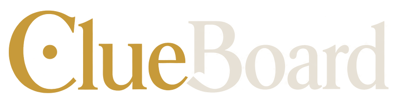
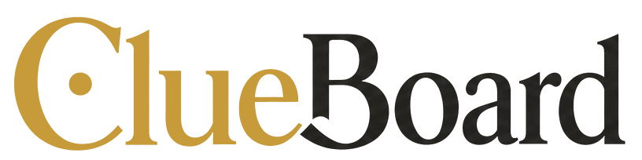

?


De waarheid zit in de
details
Filter
Open
Nr
A–Z
Zaken laden…
✕
Zo speel je
Spelregels
← Vorige
Volgende →
✕
Zelf aan de slag
Speel een eigen level
Sleep een JSON-bestand hierheen, of klik om te kiezen
of
Bouw een level
Teken een bord, schrijf aanwijzingen en exporteer je eigen zaak.
Proefstand
Toont in de player het bouwmenu voor vloeren en muren.